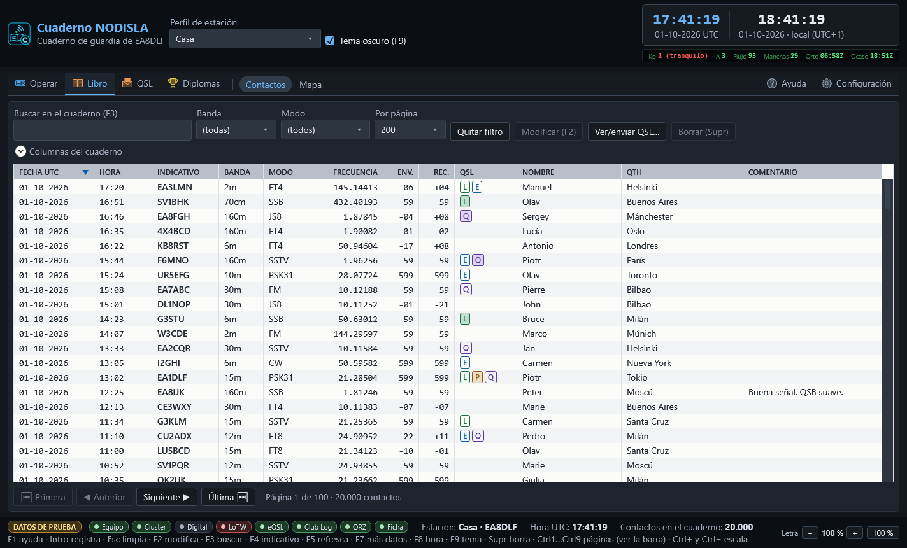

Contactos
Libro › Contactos (Ctrl 3) es la rejilla de contactos del cuaderno, con la página entera para ella sola, que es lo que necesita una rejilla de veinte mil filas. La entrada Libro agrupa también el Mapa (Ctrl 4).


Buscar y filtrar
- Buscar en el cuaderno (F3) — busca por indicativo, nombre, QTH, localizador, país o comentario a la vez, sin tener que elegir en cuál de esos campos.
- Banda y Modo — filtran a un valor concreto.
- Por página — cuántas filas se cargan de golpe; la rejilla está paginada porque un cuaderno de miles de contactos no se carga entero en memoria cada vez.
Si el filtro no deja pasar ninguna fila, el cuaderno lo dice en el centro de la rejilla: una rejilla en blanco no distingue por sí sola entre «no hay contactos» y «el filtro no deja pasar ninguno», y son dos cosas muy distintas.
Las columnas
El desplegable «Columnas del cuaderno» deja encender y apagar columnas: frecuencia, informes, nombre, QTH, localizador, distancia, comentario, mi indicativo, confirmaciones, antena, propagación, radioescucha, completado, casual, mensaje QSL, mi nombre, IOTA. Se puede ordenar por cualquier columna con clic en su cabecera, cambiar su ancho y reordenarlas arrastrando.
La columna QSL no dice «Sí» o «No»: enseña cuatro pastillas — L de LoTW, E de eQSL, P de papel, Q de QRZ — rellenas cuando esa vía en concreto ha confirmado el contacto, así se ve de un vistazo por dónde está confirmado y por dónde no.
Editar y borrar
- Modificar (F2) o doble clic en una fila abre el editor del contacto seleccionado.
- Borrar (Supr) lo elimina, pidiendo confirmación antes.
- Quitar filtro limpia la búsqueda y los filtros de banda y modo de golpe.
- Ver/enviar QSL… (botón, o clic derecho en la rejilla) abre la tarjeta QSL de los contactos elegidos para verla, guardarla o mandarla por correo. Se pueden elegir varios con Ctrl/Mayús + clic. Ver Tarjeta QSL propia.
Fusión de duplicados al importar
Cuando se importa un fichero ADIF — desde Configuración → Libro (ADIF) → Importar ADIF…, o desde la ventana de bienvenida la primera vez — los contactos que ya están en el cuaderno no se duplican ni se descartan: se funden. Si dos copias del mismo contacto traen datos distintos —por ejemplo una con la QSL confirmada por LoTW y otra sin esa confirmación—, el resultado se queda con lo mejor de las dos.
Al terminar la importación se enseña el parte completo, con las confirmaciones rescatadas destacadas aparte: es la cifra que demuestra por qué merece la pena fundir en vez de saltarse los duplicados sin más — cada una es un diploma que no se pierde por el camino.